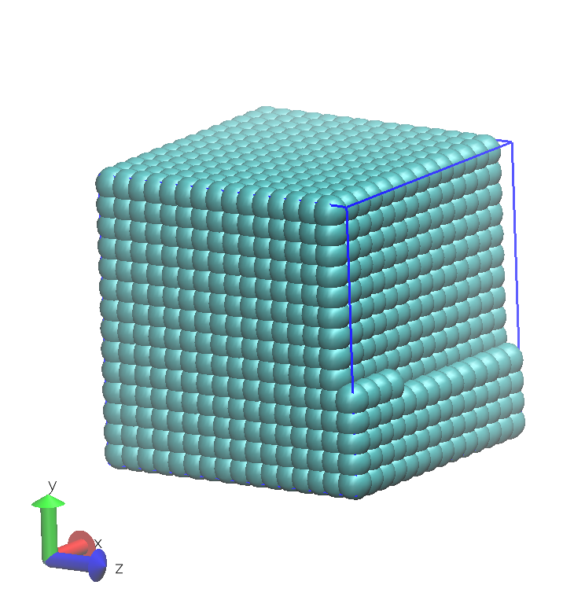
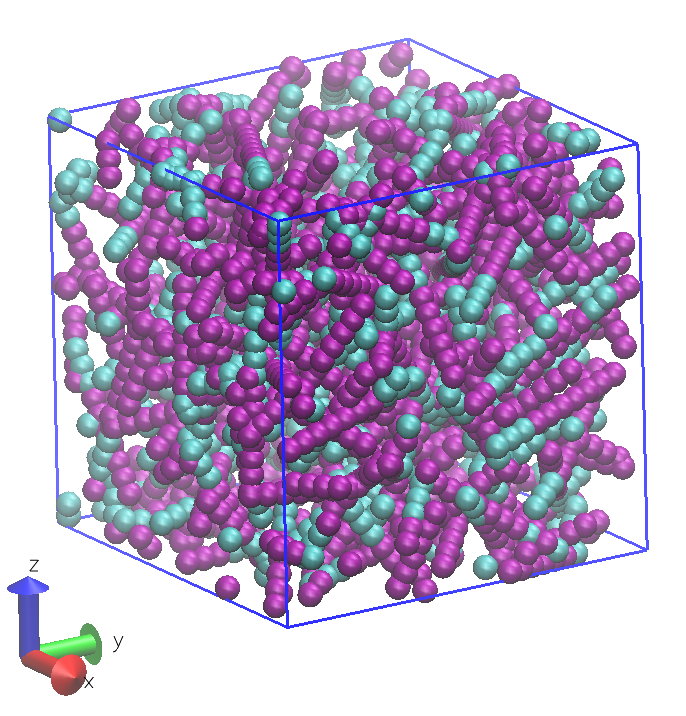

Inputs Preparation¶
The aim of these instructions is to show you how to simulate a liquid at the mesoscale using Dissipative Particle Dynamics (DPD).
We will prepare two sets of DL_MESO_DPD input files for different representations of liquids: one based on single particles (beads) containing one or more small molecules each, and the other based on chains of connected beads representing larger molecules (effectively a polymer melt).
In both cases, the inputs required involve representations of the liquid and its interactions in one file (FIELD), and simulation controls (CONTROL).
| TIP: | DL_MESO_DPD can read CONFIG files specifying at least the positions of the particles at the start of a simulation, although these are entirely optional. If no CONFIG file is provided, DL_MESO_DPD will work out initial positions, velocities and forces for all particles based on the contents of the CONTROL and FIELD files. |
|---|
Both simulations will make use of internal DPD simulation units, which are normally:
- the mass of a bead, \(m\)
- a length scale, usually the interaction cutoff distance \(r_c\)
- an energy scale based on the system temperature, \(k_B T\)
and are usually all set to 1 internally in the calculation. We can also specify charge valencies for beads (relative to the charge of an electron \(e\)), although we are not including charge-based interactions in these examples.
The calculation will take place inside a periodic box, whose size we will specify in the CONTROL file. We will also make use of ‘standard DPD’ Groot-Warren interactions between beads: (5) in the DPD page of the Knowledge Center.
Background theory and information¶
Groot-Warren ‘standard DPD’ interactions between particles of a single type can be parameterised - through the conservative force parameter \(A_{ij}\) - to obtain a required isothermal compressibility \(\kappa_T\). For particle densities (number of beads per unit volume \(r_c^3\)) of \(\rho \ge 2\) to ensure the predicted equation of state will apply and assuming one molecule of water per bead, this parameter will equal:
DPD simulations often use densities of \(\rho = 3\), leading to the frequently used value \(A_{ij} = 25\). In the case of the molecular fluid, we can tune the value of \(A_{ij}\) between beads of different types to control e.g. hydrophobicity and phase behaviour.
The dissipative force parameter \(\gamma_{ij}\) controls the pairwise DPD thermostat and has an effect on the fluid viscosity and self-diffusivity. To obtain an equilibrium state as quickly as possible, the viscosity should be kept as low as possible, which normally informs the choice \(\gamma_{ij} = 4.5\).
| TIP: | If we later decide to use an alternative pairwise thermostat (e.g. Lowe-Andersen), the parameter for that thermostat - given for each pair of bead species - would be specified in place of \(\gamma_{ij}\) in the FIELD file. |
|---|
To ensure reasonably low errors (small standard deviations) in statistically calculated properties, a box volume of at least \(10 r_c \times 10 r_c \times 10 r_c = 1000 r_c^3\) is recommended, setting the number of beads to \(\rho V = 3000\).
The choice of timestep size \(\Delta t\) for a DPD simulation - relative to the DPD time unit \(\tau\) [1] - will have an effect on how well the thermostat will be able to attain and maintain the specified system temperature. A maximum timestep size of 0.05 is recommended for systems without bonded interactions, although a smaller value will ensure better temperature control.
The choice for the total number of timesteps should be made to ensure the required phenomena can be sufficiently sampled to obtain representative properties, while the number of equilibration timesteps should be chosen to get the system to a state of equilibrium and ready to reliably sample the required properties. Frequencies of writing statistical properties and/or trajectories should be chosen with post-calculation sampling and analysis in mind, balancing accuracy obtained from frequent sampling with available filespace to store the data.
Simple fluid¶
Step 1: Create the FIELD file
Each particle or bead in this simulation represents one or more molecules in the liquid. As such, just the number of beads for the fluid and how they interact with each other need to be included in the FIELD file.
Open a text editor, then copy and paste the following into it:
Simple DPD fluid example
SPECIES 1
FLUID 1.0 0.0 3000 0
INTERACTIONS 1
FLUID FLUID dpd 25.0 1.0 4.5
CLOSE
and save as a file called FIELD.
The section of the FIELD file under the keyword SPECIES describes the available particle species, the properties for a bead of each species and the numbers of beads as a solvent (i.e. not included in molecules). In this case, each bead of liquid - referred to as FLUID - has a mass of 1 and charge valency of 0, while we want 3000 beads in the simulation box to move around freely (i.e. they will not be frozen in place).
The section under the keyword INTERACTIONS describe the interactions between particles: in this case, solely between pairs of beads of type FLUID. We need to specify the interaction type (‘standard DPD’, dpd) and the parameters: conservative force parameter \(A_{ij}\), cutoff distance \(r_c\) and dissipative force parameter \(\gamma_{ij}\).
Step 2: Create the CONTROL file
Open a text editor, then copy and paste the following into it:
Simple DPD fluid example
volume 10.0 10.0 10.0
temperature 1.0
cutoff 1.0
timestep 0.01
steps 120000
equilibration steps 20000
trajectory 20000 1000 0
stats every 100
stack size 100
print every 100
job time 3600.0
close time 20.0
ensemble nvt mdvv
finish
and save as a file called CONTROL.
This file allows us to specify important properties of our DPD simulation. Temperature, timestep size (\(\Delta t\)), numbers of timesteps (in total and for equilibration) and the ensemble (including the thermostat and its implementation) are the critical properties that need to be specified. Since we are not supplying an initial configuration but allowing DL_MESO_DPD to work one out, we also need to specify the system volume (or box dimensions).
The line in CONTROL for writing trajectory data to a HISTORY file:
trajectory 20000 1000 0
specifies the first timestep to write the data, the number of timesteps between each written frame and the amount of data collected per particle: 0 for positions only, 1 for positions and velocities, 2 for positions, velocities and forces.
The line in CONTROL for writing statistical data:
stats every 100
specifies how frequently this data (potential energies per particle, pressure tensor, system pressure and temperature etc.) are written to a CORREL file. This starts after equilibration to ensure the data are representative of the system being modelled.
Information about the progression of the simulation will be written to an OUTPUT file at a user-specified frequency, which includes instantaneous and rolling average values of system properties (similar to those written to the CORREL file). The rolling average values of these properties are calculated using statistical stacks of values, whose sizes can be specified by the user in the CONTROL file.
The resulting initial configuration for the simulation is determined using the contents of the FIELD file and the volume specified in CONTROL. DL_MESO_DPD assumes beads not included in molecules are positioned in a cubic lattice, such as the one shown below.
{kind=link}
Molecular fluid¶
Step 1: Create the FIELD file
We are following a previous study [Horsch2004] and using molecules of 10 particles bonded together with harmonic springs, each with 3 beads of species A and 7 of species B. To keep the same total number of beads as before, we would therefore need to include 300 of these molecules.
Open a text editor, then copy and paste the following into it:
Molecular DPD fluid example
SPECIES 2
A 1.0 0.0 0 0
B 1.0 0.0 0 0
MOLECULES 1
A3B7
nummols 300
beads 10
A -1.80 0.0 0.0
A -1.40 0.0 0.0
A -1.00 0.0 0.0
B -0.60 0.0 0.0
B -0.20 0.0 0.0
B 0.20 0.0 0.0
B 0.60 0.0 0.0
B 1.00 0.0 0.0
B 1.40 0.0 0.0
B 1.80 0.0 0.0
bonds 9
harm 1 2 50.0 0.0
harm 2 3 50.0 0.0
harm 3 4 50.0 0.0
harm 4 5 50.0 0.0
harm 5 6 50.0 0.0
harm 6 7 50.0 0.0
harm 7 8 50.0 0.0
harm 8 9 50.0 0.0
harm 9 10 50.0 0.0
finish
INTERACTIONS 3
A A dpd 25.00 1.0 4.5
A B dpd 34.35 1.0 4.5
B B dpd 25.00 1.0 4.5
CLOSE
and save as a file called FIELD.
Compared to the simple fluid example above, the additional section starting with the keyword MOLECULES defines molecule types for the simulation. Each molecule type includes its name, the total number of molecules for each type, the required beads per molecule and bonded interactions between them. The word finish indicates the end of a molecule’s definition.
The list of beads by species (under beads) also includes a sample configuration (coordinates) for the molecule, enabling copies of it to be added to the simulation box when the calculation starts. This sample configuration places the beads in a straight line and separates them by 0.4 length units (close to the expected bond lengths after equilibration). The list of bonds specifies which pairs of beads (given as numbers in each molecule) are connected together, the type of bond interaction and its parameters.
| TIP: | The numbers of beads involved in molecules do not need to be included in the numbers given under the SPECIES keyword, which only specify the numbers in the single-bead (non-molecular) solvent. |
|---|
Step 2: Create the CONTROL file
Open a text editor, then copy and paste the following into it:
Molecular DPD fluid example
volume 10.0 10.0 10.0
temperature 1.0
cutoff 1.0
boundary halo 2.2
timestep 0.01
steps 120000
equilibration steps 20000
trajectory 20000 1000 0
stats every 100
stack size 100
print every 100
job time 3600.0
close time 20.0
ensemble nvt mdvv
finish
and save as a file called CONTROL.
This file is similar to the CONTROL file for the simple fluid system but includes the additional keyword boundary halo, which tells DL_MESO_DPD to search further than the cutoff distance when constructing boundary halos for force calculations. This makes it possible to find pairs of beads bonded together in molecules that could be further than \(r_c\) apart. The maximum distance given here is mainly required during equilibration and could be reduced if the simulation is restarted.
An alternative approach to increasing the boundary halo size is to use a replicated data approach to find beads in molecules. This can be invoked by replacing the boundary halo line with
global bonds
This approach can be computationally more expensive to apply when running DL_MESO_DPD in parallel and is not recommended for ‘production runs’ (e.g. when calculating equilibrium properties), but it can be used to equilibrate particularly troublesome systems.
The resulting initial configuration for the simulation is determined using the contents of the FIELD file and the volume specified in CONTROL. DL_MESO_DPD assumes molecules are distributed randomly inside the box and rotates them randomly before insertion. The image shown below gives an example of a configuration devised by DL_MESO_DPD for this system. (Note that some molecules extend beyond the periodic boundaries of the box and parts of a particular molecule can end up on opposite sides.)
{kind=link}
References
| [Horsch2004] | MA Horsch, Z Zhang, CR Iacovella and SC Glotzer, Hydrodynamics and microphase ordering in block copolymers: Are hydrodynamics required for ordered phases with periodicity in more than one dimension?, Journal of Chemical Physics, 121 (22), pp. 11455-11462, 2004, doi: 10.1063/1.1814976. |
Footnotes
| [1] | The DPD time unit \(\tau\) can be defined or specified in a couple of ways, including one resulting from our simulations here. |